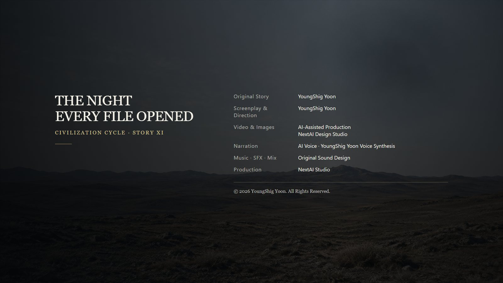

I. Three Words
My job is to measure. If I have not measured it, I do not write it down.
I lived by that one rule for fourteen years. Because of it, not one of my reports was ever rejected, and not one was ever cited. No one reads a document made entirely of numbers. I liked it that way.
The call came at eleven p.m. on February 11.
Basement Level Three of the National Archaeological Civilization Survey Project. The climate-controlled archive. I had stored the original survey records there three years earlier and had not returned since.
Three people were already there when I arrived. They did not know one another. It was the first time I had seen any of them.
Han Seo-jin handled file restoration. Moon Hae-won reconstructed pressure impressions. Kang Do-yoon corrected optical character readings. I did field measurement.
Each of us had deposited different material in the archive, in different years. None of us had ever seen the others’ work.
Han Seo-jin: “They’ve been merged.”
He turned the screen toward us. Four archives had become a single file. There was no record of who had combined them. The time of the merge remained: 10:41 p.m.
At that hour, I had been at home. Han Seo-jin had been on his way home from work. Moon Hae-won had been on the subway. Kang Do-yoon had been asleep.
Every device in the archive displayed the same thing: the scanner, the impression reproducer, the correction terminal, the survey server. None of them were connected to one another.
Three words.
ARRIVE / ANGLE / TWO HANDS
The site director was the last to come down. She looked ten years younger than the rest of us.
She was the only person in the project who had read all four sets of records. She was also the one who had summoned us.
Yoon-seo: “It means no one erased it.”
Those were her first words.
Han Seo-jin scrolled to the bottom of the file. The file he had restored five years earlier ended with an empty final line. Something had been appended beneath it.
None of the four of us had put it there.

II. Comparison
What had been appended was not a single line. It was an entire file, larger than all four of ours combined.
Han Seo-jin checked its ending first.
Han Seo-jin: “The bottom is blank here too.”
The last sentence in the file he had restored five years earlier was: Leave the space below empty. The appended file also ended with the same space unfilled.
Moon Hae-won: “Couldn’t that be coincidence?”
Han Seo-jin: “It’s a convention. They leave the final line empty over there too.”
Moon Hae-won: “Why?”
Han Seo-jin: “Because they assume there will be something after it.”
That night, each of us brought out our own material.
Moon Hae-won’s records measured the depth and angle of impressions left on the backs of sheets of paper. For ten years, she had traced the reverse sides of her mother’s letters with her fingertips. The record that had arrived bore the same kind of marks: sentences written not in ink, but in pressure.
For twelve years, Kang Do-yoon had distinguished human errors from machine errors. When a machine was wrong, the result made no sense. When a person was wrong, it did. That was his entire method.
He found one sentence in the arrived record.
Arrival is not destruction.
He stared at it for a long time.
Kang Do-yoon: “I know this sentence.”
The same sentence appeared in a fifteenth-century manuscript he had examined two years earlier. One character was displaced. He had classified it as a misprint and left it uncorrected.
Now the earlier version lay before him. His judgment had not been wrong. But the displacement was neither a machine’s error nor a human one.
Kang Do-yoon: “It’s a third kind. It didn’t shift one character each time it was copied. Each copy shortened it. The original was longer than this.”
Moon Hae-won: “How much longer?”
Kang Do-yoon: “I don’t know. What the shortening side erased leaves no trace.”
Then it was my turn.
Three years earlier, I had surveyed nineteen sites. At two of them, the azimuth deviated by exactly the same amount in exactly the same direction. An error that did not scatter: 0.4 degrees.
The arrived record contained that value. Not as a measurement, but as a design specification—something deliberately inserted while something was being built.
For fourteen years, I had called an error that did not scatter a value. Only that night did I understand what it meant. A value is something someone put there.
Kang Do-yoon looked back at the wall terminal.
Kang Do-yoon: “ARRIVE is that sentence. ANGLE is that value.”
Moon Hae-won: “What about TWO HANDS?”
Kang Do-yoon: “I don’t know. It hasn’t appeared yet.”

III. How to Read
Moon Hae-won switched on the impression reproducer at two in the morning.
To read a pressure mark, you have to press it again—with the same force, at the same angle, in the same sequence. Then you can work backward to determine what made it. The machine was only doing what she had done with her fingertips for ten years.
There were twelve pressure levels. Forty seconds per level.
At the seventh, the floor vibrated.
Beneath the archive lay a three-layered structure. It had been unearthed three years earlier and could not be moved, so the archive had been built over it: outer layer, middle layer, inner layer. I had measured all three and written nothing about what they were.
The middle layer was the one that read load.
Han Seo-jin: “Turn it off.”
Moon Hae-won: “If I stop now, only half the impression will be made.”
That was the problem.
At the eighth level, every hygrometer on the wall dropped three percent at once. At the ninth, the fluorescent lights dimmed once, then recovered. From the tenth onward, there was a sound from below, where there should have been nothing.
Moon Hae-won did not lift her hand. She went to twelve.
The method of reading and the method of opening were the same. It had been written by pressure, so pressure was required to read it—and pressing opened it. Its makers had not hidden this. They would have had no reason to. Anyone capable of reading it, they must have believed, had already earned the right to open it.
We had no such right. We only had the method.
Yoon-seo stood at the foot of the stairs and clicked her flashlight off, then on.
Yoon-seo: “This isn’t a ruin. It never stopped.”

IV. Tens of Thousands
At 3:14 a.m., all five people in the archive stopped at once.
I do not know how long it lasted. The server log said four seconds.
In those four seconds, I knew something I had not measured. It was the first time in fourteen years.
What entered us was not a sentence. It was reasons—not one, but all of them.
We misaligned the twenty-third gate first.
We did not misalign it. They copied our value incorrectly.
The child had a fever, so the meeting was postponed for three days.
No answer came during those three days, and the absence of an answer was read as an answer.
Magnes’s water ration had already been scheduled to decrease that year.
Five people raised their hands. Four opposed.
Two of the four who opposed were absent that day.
No one thought this was a reason for war.
Some were large and some were trivial. There were far more trivial ones. They had no order, no conclusion, and above all, they had not been shortened.
To say that war had tens of thousands of reasons did not mean there were many reasons. It meant that every reason was this small.
When we came back, we questioned one another. All five of us gave different answers. Moon Hae-won had not received what I had received. I had not received what she had.
Kang Do-yoon: “If five people remember five different things, it isn’t a record. It’s a misprint.”
Yoon-seo: “No. That’s what something unshortened is like.”
She was right.
Things become the same only after they are shortened. We remember the same things because we always shorten them before passing them on. What the other side sent had not been shortened. It arrived, but could not be shared.
Only one person received something different.
Yoon-seo said she had received nothing: no reason, image, or sentence. Instead, there had been a space—the place where something had been and was gone. Like the place where a hand had rested.
Moon Hae-won stopped while reading the final layer of the arrived record.
Two handprints lay side by side. Human hands. One was inside the reference line, with a value written beside it. The other was outside the line and had no value.
Moon Hae-won: “The third phrase.”
Two hands.
Then she stopped again at a mark beside them. Rendered as sound, it was two syllables—the same as Yoon-seo’s name.
Kang Do-yoon spoke first.
Kang Do-yoon: “Let’s leave this out of the findings.”
No one objected. Neither did Yoon-seo.
We left it as something unmeasured.

V. Parallax
Before dawn, a circle opened in orbit.
One became three, and by morning there were nine. Their rims were thick and their interiors dark. Three observatories detected the same thing.
There was one question: Was it an object coming toward us, or the replay of a record from long ago?
There was only one thing I could do.
Measure it simultaneously from two locations. A nearby object appears in different positions; a distant one appears in the same place. That difference is parallax. Parallax has two properties: it increases with the distance between the observation points, and it spreads along the line joining them. The method was two hundred years old and had never failed.
We measured from two observatories forty kilometers apart north to south. 0.4 degrees.
We measured east to west across 380 kilometers. 0.4 degrees.
We measured diagonally across 1,100 kilometers. 0.4 degrees.
I entered the calculation three times.
The result stayed the same when the baseline grew twenty-sevenfold and when its direction turned ninety degrees. An angle that responded to neither length nor direction was not parallax. It did not arise from observational geometry.
We were not measuring it.
Nine observatories had not seen nine objects in the sky. A single value had been read nine times. Our instruments were not observing it. They were taking dictation.
Han Seo-jin: “What does that mean?”
Me: “It means that isn’t an object. It’s a coordinate, and 0.4 degrees has been attached to it.”
Someone was calling out a coordinate. The value inserted by its makers was still alive. For thousands of years, no one had removed it.
Then whatever was coming would not come here.
It would arrive 0.4 degrees to the side.
Han Seo-jin extracted the coordinate from the arrived record and put it on the screen.
I knew those numbers.
They were the intersection produced by extending the misaligned axes of the two sites I had surveyed three years earlier. It had been empty land. I had placed the coordinate in an appendix to my report.
I added no explanation. I thought that if I wrote an interpretation, the numbers would be discarded with it. So I left only the numbers.
They matched to five decimal places.
Moon Hae-won: “How did you know this?”
Me: “I wrote it.”
That appendix was later cited in nineteen papers. The point appeared on public maps in three countries. No one knew what it was.
Three years ago, it had been unmarked ground. Now it was marked. I was the one who had marked it.
If you leave only numbers, anyone can use them. I learned that that morning.

VI. The Work of Dividing
At two in the afternoon, the order came down from the supervising agency.
Delete the entire file. Close the archive. Bury the three-layered structure.
The reasoning was clear: the structure had awakened when the file arrived, so destroying the file should stop it.
Han Seo-jin objected first.
Han Seo-jin: “It says they did that three times.”
The file he had restored five years earlier contained the sentence: Do not cross. If you cross, this place will be erased. It happened three times. It was a sentence left by the side that had been erased.
Erased three times, and present again three times.
Han Seo-jin: “Deletion is a method already tried. They tried it.”
Yoon-seo: “We haven’t measured whether deleting it will stop the structure. What deletion certainly removes is the cause.”
Han Seo-jin: “Then do we keep it? If we keep it, it opens again.”
Yoon-seo: “If we keep it in one place.”
She chose a third option.
The original would remain underground. The decryption key would be divided into eleven pieces: the National Archives, four universities, three regional libraries, two observatories, and one private preservation society. All eleven would be required to open it.
Kang Do-yoon: “The five of us have already seen it.”
Yoon-seo: “And all five of us saw something different.”
That too was true. Even if the five of us assembled, the file could not be restored. Each of us held only what we had received, and our pieces did not agree.
The original order was not withdrawn. Yoon-seo submitted the distribution plan in its place, with a condition attached: she was removed as site director.
Yoon-seo: “If I’m not the director, I don’t have to take their orders.”
It took three days to move the pieces of the key to eleven locations.
Me: “What are we?”
It was the first time I had asked about something unmeasured.
Yoon-seo: “We’re neither Chiwoo nor René.”
Me: “Then what are we?”
Yoon-seo: “People who can look at what both species left behind and choose not to repeat either one.”
It was a fine thing to say. Because it was fine, I did not believe it.
Yoon-seo did not seem to believe it either. As she sealed the last box, she said:
Yoon-seo: “Lee Chae-won. This is shortening too. We’re doing it knowingly.”
It was the first time anyone had spoken my name. In the report three years earlier, my name had appeared only on the cover.
Divide it into eleven, and no one can see the whole. If no one can see the whole, each person makes a story from the part they have. That is shortening. The day after the other side sent us tens of thousands of reasons without reducing them, we cut the record into eleven pieces.
There was no other way.
Having no other way does not make a way right.
Yoon-seo returned to the archive three days later. She no longer had a title.

VII. Not a Place We Chose
Four days later, I went to the coordinate.
I went alone. There was nothing there to measure. There had been nothing there three years earlier either.
I opened the tripod. I adjusted the legs. I checked the level. The bubble took exactly as long as always to settle in the center. That had not changed at all.
The circle was above it.
I did not write a new report. I opened the appendix to my report from three years earlier and added one line beneath the coordinate.
This coordinate is not a place we chose.
I had not written that line three years before. I thought that if I did, someone would discard the numbers with it. That judgment was still not wrong. Because of this line, someone would reject those numbers.
I added it anyway.
This too was shortening. I had reduced the tens of thousands that came that night to one line. I added it knowing that, and I did not erase it.
I checked the bubble again. It was centered.
I looked up.
The instrument told me that the thing above was a value. A value had no reason to be visible.
There was a form inside the circle, its edges blurred and its center dark. I measured the angle ten times. All ten readings were the same. They did not scatter.
Every value that could be obtained had been obtained.
What did not emerge was whether it was coming toward us, or whether it was the trace of something that had arrived long ago.
I left that field blank.
